***
←
→
What is data mining?
Data mining is the science of extracting useful information from large datasets.
At the heart of data mining is the process of discovering RELATIONSHIPS between parts of a dataset.
"Data mining is the analysis of (often large) observational data sets to find unsuspected
relationships and to summarize the data in novel ways that are both understandable and
useful to the data owner. The relationships and summaries derived through a data mining exercise are often
referred to as models or patterns".
The term 'trend' is used to describe patterns that occur or change over time.
How is ML different from DM?
Machine learning is the process of TRAINING an algorithm on an EXISTING dataset in order to have it discover relationships (so as to create a model/pattern/trend), and USING the result to analyze NEW data.
Here is Andrew Ng's 'classic' Stanford course on ML that is hosted at Coursera, which he co-founded [till early 2017, Andrew was with Baidu].
Here is how data mining relates to existing fields:
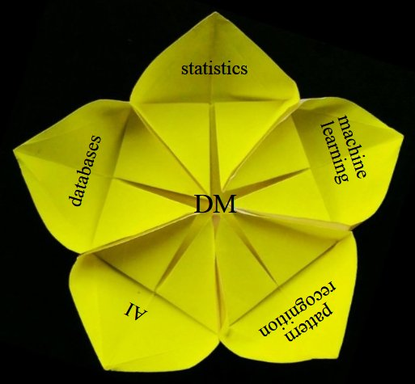
By nature, most data mining is cyclical. Starting with data, mining leads to discovery, which leads to action ("deployment"), which in turn leads to new data - the cycle continues.
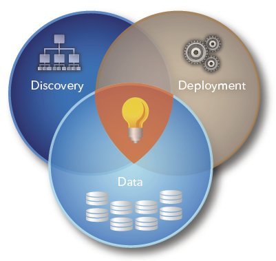
A more nuanced depiction of the cycle:
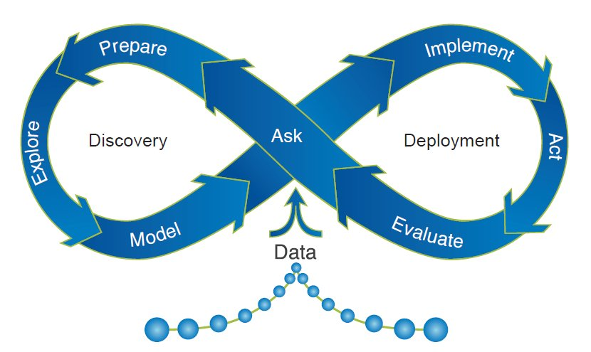
As you can imagine, data mining is useful in dozens (hundreds!) of fields!! Almost ANY type of data can be mined, and results put to use. Following are typical uses:
- predicting which customers will purchase what
products and when
- deciding should insurance rates be set to
ensure profitability
- predicting equipment failures, reducing
unnecessary maintenance and increasing
uptime to optimize asset performance
- anticipating resource demands
- predicting which customers are likely to leave and what
can be done to retain them
- detecting fraud
- minimizing financial risk
- increasing response rates for marketing campaigns
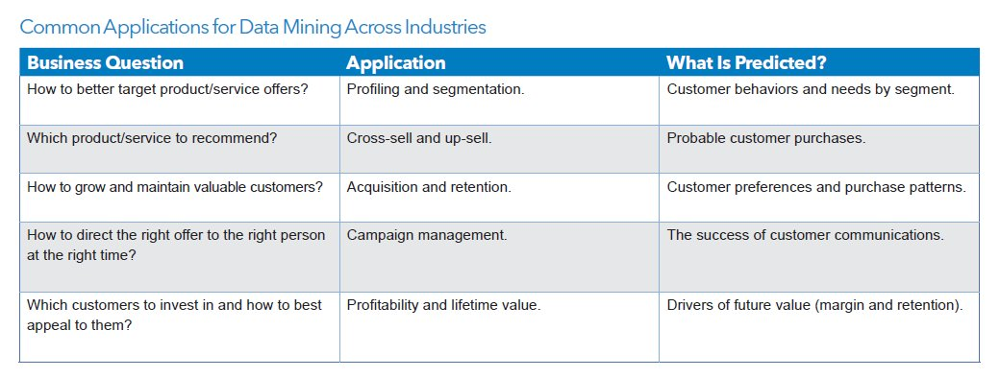
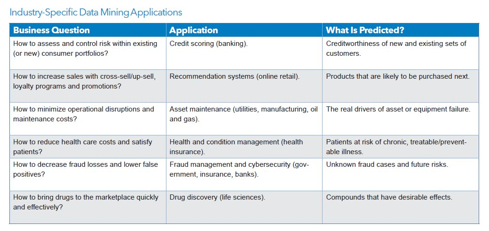
Data mining algorithms: categories
Practically all data mining ('DM') algorithms neatly fit into one of these 4 categories:
- Classification: involves LABELING data
- Clustering: involves GROUPING data, based on similarity
- Association: involves RELATING data
- Regression: involves COUPLING data [incl finding 'outliers']
We'll look at examples in each category, that will provide you a concrete understanding of the above summarization.
DM algorithms can also be classified in a different way - as being a 'supervised' learning method (where we need to provide categories for, ie. train, using known outcomes), or an 'unsupervised' method (where we provide just the data to the algorithm, leaving it to learn on its own), or 'semi-supervised', or even 'self-supervised'.
Algorithms!
Now we can start discussing specific algorithms (where each one belongs to the four categories we just outlined).
Challenge/fun - can each algorithm be talked about, without using any math at all? You get the 'big picture' [a clear, intuitive understanding] that way.. After that, we can optionally look at equations/code for the algorithms, to learn the details (God/the devil *is* in the details :)).
Algorithm: Decision trees (eg. C4.5, C5.0 etc.)
Classification and regression trees (aka decision trees) are machine-learning methods for constructing
prediction models from data. The models are obtained by recursively partitioning
the data space and fitting a simple prediction model within each partition.
The decision tree algorithm works like this:
- user provides a set of input (training) data, which consists of features (independent parameters) for each piece of data, AND an outcome (a 'label', ie. a class name)
- the algorithm uses the data to build a 'decision tree' [with feature-based conditionals (eqvt to 'if' or 'case' statements) at each non-leaf node], leading to the outcomes (known labels) at the terminals
- the user makes use of the tree by providing it new data (just the feature values) - the algorithm uses the tree to 'classify' the new item into one of the known outcomes (classes)
Should we play tennis? Depends (on the weather) :)
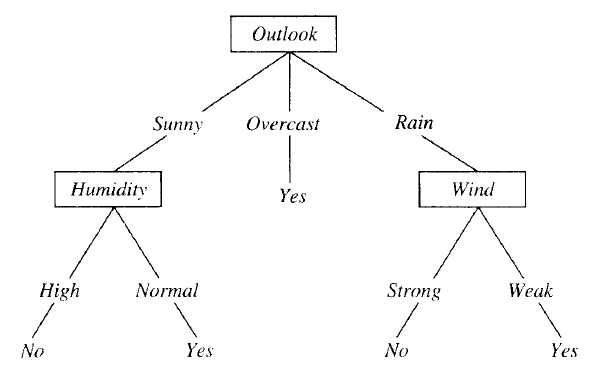
This is a VERY simple algorithm! The entire tree is a disjunction (where the branches are) of conjunctions (that lead down from root to leaves).
If the outcome (dependent, or 'target' or 'response' variable) consists of classes (ie. it is 'categorical'), the tree we build is called a classification tree. On the other hand if the target variable is continuous (a numerical quantity), we build a regression tree. Numerical quantities can be ordered, so such data is called 'ordinal'; categories are names, they provide 'nominal' data. Given that, nominal data results in classification trees, and ordinal data results in regression trees.
Here is another example (from 'Principles of Data Mining' by David Hand et. al.). Shown is a 'scatter plot' of a set of wines - color intensity vs alcohol content:
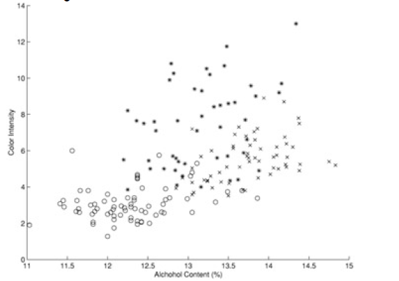
The classification tree for the above data is this:
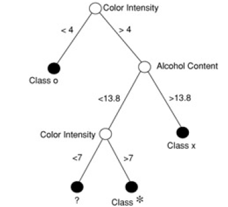
When we superpose the 'decision boundaries' from the classification tree on to the data, we see this:
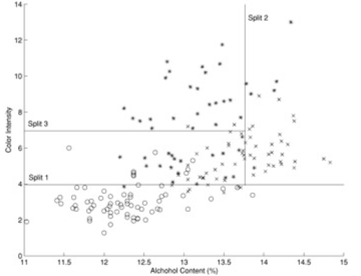
A sample regression tree is shown below - note that the predictions at the leaves are numerical (not categorical):
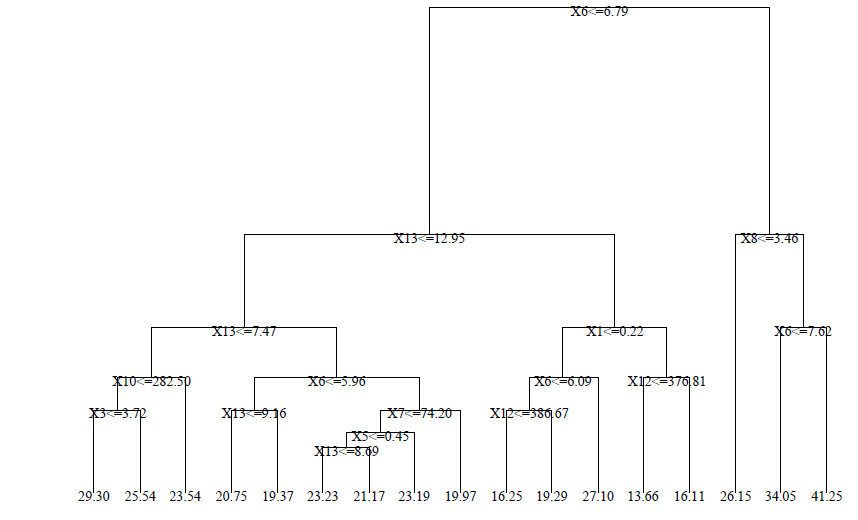
Note - algorithms that create classification trees and regression trees are referred to as CART algorithms (guess what CART stands for :)).
Algorithm: Support Vector Machine (SVM)
An SVM always partitions data (classifies) them into TWO sets - uses a 'slicing' hyperplane (multi-dimensional equivalent of a line), instead of a decision tree.
The hyperplane maximizes the gap on either side (between itself and features on either side). This is to minimize chances of mis-classifying new data.
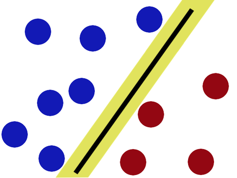
On either side, the equidistant data points closest to the hyperplane are the 'support vectors' (note that there can be several of these, eg. 3 on one side, 2 on the other). Special case - if there is a single support (closest point) on either side, in 2D, the separator is the perpendicular bisector of the line segment joining the supports; if not, the separating line/plane/hyperplane needs to be calculated
by finding two parallel hyperplanes with no data in between them, and maximizing their gap. The goal is to achieve "margin maximization".
How do we know that a support data point is indeed a support vector? If we move the data point and therefore the boundary moves, that is a support vector :) In other words, non-support data can be moved around a bit, that will not change the boundary (unless the movement brings it to be inside the current margin).
Note - in our simplistic setup, we make two assumptions: that our two classes of data are indeed separable (not inter-mingled), and that they are linearly separable. FYI, it is possible to create SVMs even if both the assumptions aren't true [think - how?].
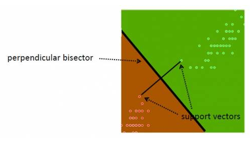
Here's some geek humor for ya:
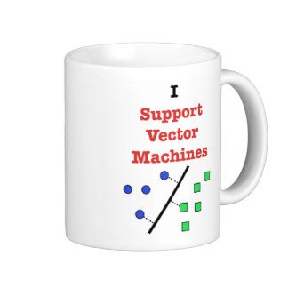
Prof. Patrick Winston @ MIT, lecturing on SVMs: https://www.youtube.com/watch?v=_PwhiWxHK8o ...
Algorithm: kNN
kNN (k Nearest Neighbors) algorithm picks 'k' neartest neighbors, closest to our unclassified (new) point, considers the 'k' neighbors' types (classes), and attempts to classify the unlabeled point using the neighbors' type data - majority wins (the new point's type will be the type of the majority of its 'k' neighbors).
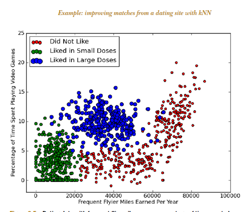
Here is an example of 'loan defaulting' prediction. With k=3, and a new point of (42,142000), our neighbors have targets of Non Default, Non Default, Default - so we assign 'Non Default' as our target.
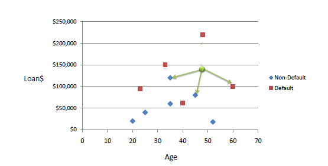
Note that if k=1, we assign as our target, that of our closest point.
Also, to eliminate excessive influence of large numerical values, we usually normalize our data so that all values are 0..1.
kNN is a 'lazy learner' - just stores input data, uses it only when classifying an unlabeled (new) input. VERY easy to understand, and implement!
Algorithm: Naive Bayes
The 'naïve' Bayes algorithm is a probability-based, supervised, classifier algorithm (given a datum with `x_1,x_2,x_3..x_n` features (ie an n-dimensional point), classify it to be one of 1,2,3...k classes).
The algorithm is so called because of its strong ('naïve') assumption: each of the `x_1` ..`x_n` features are statistically independent of each other ["class conditional independence"] - eg. a fruit is an apple if it is red, round and ~4 in. dia [color, shape and size are independent metrics].
Other names for this algorithm: simple Bayes, independence Bayes, idiot Bayes (!).
For each training feature set, probabilities are assigned for each possible outcome (class). Given a new feature, the algorithm outputs a classification corresponding to the max of the most probable value of each class (which the algorithm calculates, using the 'maximum a posteriori', or 'MAP' decision rule).
Here is an example (from http://www.statsoft.com/textbook/naive-bayes-classifier).
Given the following distribution of 20 red and 40 green balls (ie. 60 samples, 2 classes [green,red]), how to classify the new [white] one ('X')?
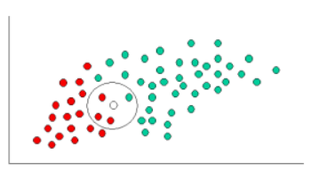
PRIOR probability of X being green or red:
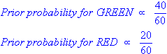
Given the neighborhood around X, probability (LIKELIHOOD) of X being green, X being red:
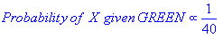
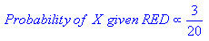
POSTERIOR probabilities of X being green, X being red [posterior probability = prior probability modified by likelihood]:
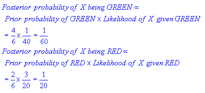
Classify, using the max of the two posterior probabilities above [MAP]: X is classified as 'red'.
Algorithm: k-means clustering
This algorithm creates 'k' number of "clusters" (sets, groups, aggregates..) from the input data, using some measure of closeness (items in a cluster are closer to each other than any other item in any other cluster). This is an example of an unsupervised algorithm - we don't need to provide training/sample clusters, the algorithm comes up with them on its own.
If each item in our (un-clustered) dataset has 'n' attributes, it is eqvt to a point in n-dimensional space (eg. n can be 120, for Amazon!). We are now looking to form clusters in n-D space!
Approach: start with 'n' random locations ('centroids', ie means) in the dataset; assign each input point (our data) to the [current] closest centroid; compute new centroids (from our data, for each centroid's "membership"); iterate (till convergence is reached) - this is the 'mean shift' algorithm. Here is another description.
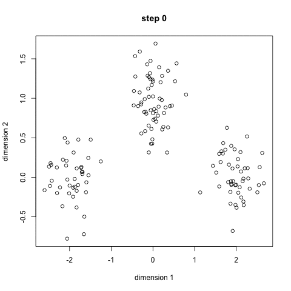
Here is a/nother clip showing the cluster creation; here is the Java .jar file (download, double click to open) used to create the clip.
This page contains JavaScript code that implements k-means - the centroid migration trail is plotted; this is the neat result.
Here is a use case for doing clustering:
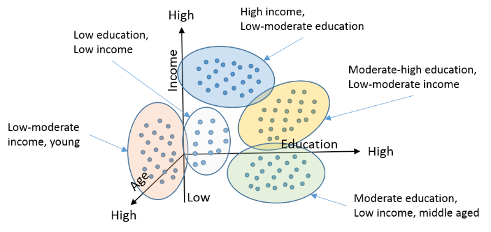
Again, very simple to understand/code!
Another example - here, we classify clients of a company, into 3 categories, based on how many orders they placed, and what the orders cost:
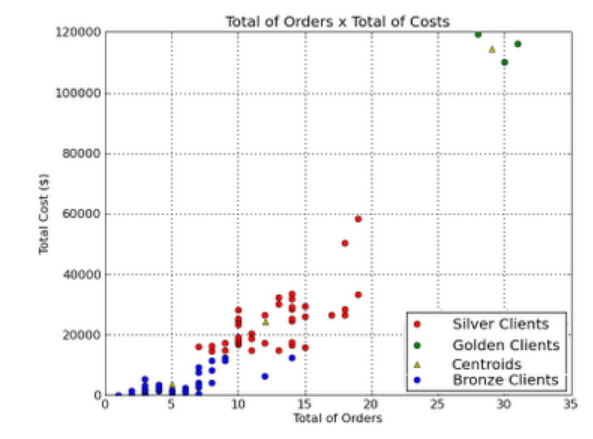
Q: how many clusters are ideal? Here is a way to estimate it [on the Y axis, plot SSE - sum of the squared distance between each cluster point and its centroid].
Algorithm: Hierarchical clustering
In some situations (where it is meaningful to do so), it is helpful to separate items in a dataset into hierarchical clusters (clusters of clusters of..). There are two ways to look at this - as the merging of smaller clusters into bigger superclusters, or dividing of larger clusters into finer scale ones.
Below is a dataset that plots, for Yellowstone National Park, the waiting time between geyser eruptions, and time length (duration) of eruptions. The data points are numbered, just to be able to identify them in our cluster diagram.
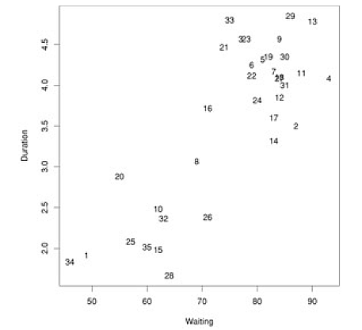
Given this data, we run a hierarchical clustering algorithm, whose output is a 'dendrogram' (tree-like structure) that shows the merging of clusters:
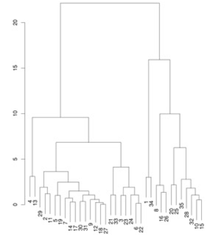
Another example:
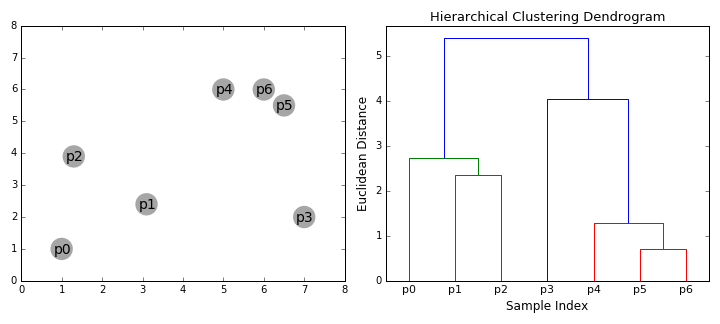
How do we decide what to merge? A popular strategy - pick clusters that lead to the smallest increase in sum of squared distances (in the above diagram, that is what the vertical bar lengths signify). The dendrogram shows that we need to start by merging #18 and #27, which we can verify by looking at the scatter plot (those points almost coincide!).
Algorithm: EM (Expectation Maximization)
EM is a rather 'magical' algorithm that can solve for a Catch-22 (circular reference) set of values! Here we use it, to cluster data.
Imagine we have a statistical model that has some parameters, regular variables, and some 'latent' (hidden) variables [eg. data columns with missing values]. The model is expected to operate on new data (predict/classify), given training/pre-existing data. Sounds like a straightforward DM algorithm (eg. k-means clustering), except that it is not!
We do not know the values for the model parameters, or latent/missing variables! We DO have observed/collected/measured data, which the model should be able to act on, ie we have 'outcomes'. The question is, what model parameters would explain (result in, produce...) the outcomes? In other words, we want to explain why/how those outcomes result.
The algorithm works as follows:
- pre-step: start with random (!) values for the model parameters
- step1: use current param values to compute probabilities for all possible values for each hidden (latent) var, then do a weighted average (weighted by probability) to compute the best value for each latent var (this is the 'E' step)
- step2: use the hidden vars' values found in the above step, to improve/update the model parameters ('M' step) - do this by maximizing likehood [for the outcomes, given the params]
- iterate the above two steps till param values converge
As counter-intuitive as it sounds, this does work!
Here is another explanation, from a StackOverflow post:
There's a chicken-and-egg problem in that to solve for your model parameters you need to know the distribution of your unobserved data; but the distribution of your unobserved data is a function of your model parameters.
E-M tries to get around this by iteratively guessing a distribution for the unobserved data, then estimating the model parameters by maximizing something that is a lower bound on the actual likelihood function, and repeating until convergence:
- start with guess for values of your model parameters
- E-step: For each datapoint that has missing values, use your model equation to solve for the distribution of the missing data given your current guess of the model parameters and given the observed data (note that you are solving for a distribution for each missing value, not for the expected value). Now that we have a distribution for each missing value, we can calculate the expectation of the likelihood function with respect to the unobserved variables. If our guess for the model parameter was correct, this expected likelihood will be the actual likelihood of our observed data; if the parameters were not correct, it will just be a lower bound.
- M-step: Now that we've got an expected likelihood function with no unobserved variables in it, maximize the function as you would in the fully observed case, to get a new estimate of your model parameters.
- repeat until convergence.
EM is frequently used to 'auto cluster' data.
Here is an example of EM being used to compute clustering on a dataset (centroids are the model params, cluster memberships are the latent vars).
EM is an example of a family of maximum likelihood estimator [MLE] algorithms - others include gradient descent, and conjugate gradient algorithms [which are optimization algorithms, that can, among other things, be used for MLE].
One more example: EM clustering of Yellowstone's Old Faithful eruption data:

Note that in the above, the initial random model consists of two flattened spheres.
Classif vs clustering algorithm[s]: a clarification
What is the difference between classification and clustering? Aren't they the same?
Classification algorithms (when used as learning algorithms) have one ultimate purpose: given a piece of new data, to place it into one of several pre-exising, LABELED "buckets" - these labels could be just names/nonimal (eg. ShortPerson, Yes, OakTree..) or value ranges/ordinal (eg. 2.5-3.9, 100,000-250,000)..
Clustering algorithms on the other hand (again, when used as learning algorithms) take a new piece of data, and place it into a pre-existing group - these groups are UN-LABELED, ie. don't have names or ranges.
Also, in parameter (feature/attribute) space, each cluster would be distinct from all other clusters, by definition; with classification, just 'gaps' don't need to exist.
Note that we use multiple terms to denote data. If we imagine data to be tabular, each row would constitute one sample, with each column being refered to as an attribute/parameter/feature/input/independent variable/descriptor/dimension, and the label column (if present) being refered to as a label/class/target/output/dependent variable/response variable/dimension.
Each sample (row) would constitute a single point in the multidimensional space/axes/coordinate system created by the columns, including the label column (if present), and the collection of rows/samples would lead to a distribution - data mining consists of finding patterns in such a multi-dimensional point distribution.
Algorithm: A priori
Looking for hidden relationships in large datasets is known as association analysis or association rule learning.
The A priori algorithm comes up with association rules (relationships between existing data, as mentioned above).
Here is an example: outputting "items purchased together" (aka 'itemsets'), eg. [chip, dip, soda], from grocery transaction records.
Inputs:
- data ("shopping basket"), ie. raw data of items bought during multiple transactions
- size of the desired itemsets (eg. 2, 3, 4..) - # of items bought together
- the support (number of times the itemset occurs, divided by the total # of data items)
- confidence (conditional probability of an item being in a datum, given another item - in other words, the ratio of supports)
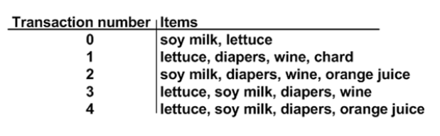
In the above, support for {diapers,wine} is 3/5, and support for {diapers} alone is 4/5; the confidence for {diapers} -> {wine} [given a purchase of diapers, would there also be a purchase of wine]
is support({diapers,wine})/support({diapers}), which is 3/5 over 4/5, which is 0.75 (note that 5, ie the total, cancels out). In other words, 75% of the time, a purchase of diapers is also accompanied by the purchase of wine.
What is specified to the algorithm as input, is a [support (ie. frequency),confidence (ie. certainty, ie. accuracy)] pair - given these, the algorithm outputs all matching associations that satisfy the [support,confidence] criteria. We would then make appropriate use of the association results (eg. co-locate associated items in a store, put up related ads in the search page, print out discount coupons for associated products while the customer is paying their bill nearby, etc.).
Below is another 'shopping basket' example, with products in columns, customers in rows.
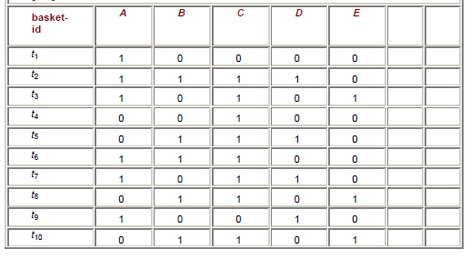
If we set a frequency (ie support) threshold of 0.4 and confidence of 0.5, we can see that the matching items are {A}, {B}, {C}, {D}, {A,C}, {B,C} (each of these occur >=4 times). We can see that {A,C} has an accuracy (ie. confidence) of 4/6=2/3 [occurences-of-AC/occurences-of-A], and {B,C} has an accuracy of 5/5=1 [EVERY time B is purchased, C is also purchased!].
Summary: given a basket (set of itemsets), we can look for associations between itemsetA and itemsetB, given:
- size (count) of itemsetA (eg. 2, eg. {A,C} above)
- size (count) of itemsetB (eg. 1, eg. {A} above)
- threshold/support (S) for itemsetA, eg. 0.4 above
- threshold/support (S) for itemsetB, eg. 0.4 again, above
- confidence for S(itemsetA)/S(itemsetB), eg. 0.5 above
So if our five inputs listed above are (2,1,0.4,0.4,0.5) in the above basket example, the outputs would be (A,C) and (B,C), which means we'd consider co-locating or co-marketing (A,C) and also (B,C) - this is the actionable result we get, from mining the basket data.
Note - such association-mining is also useful in recommendation engines, where it is classified as a form of 'collaborative filtering' (as opposed to 'content-based filtering') algorithm.
Algorithm: Linear regression
This (mining) technique is straight out of statistics - given a set of training pairs for a feature x and outcome y, fit the best line describing the relationship between x,y. The line describes the relationship/pattern.
Given that we have
`Y_i` which depends on `X_(i 1), X_(i 2), X_(i 3)... X_(i p)` [`i` is the sample index (one "row" of data/one observation/...), 1,2,3..`p` are the variable indices (dimensions)], we seek to model the dependency relationship as
`Y_i = f(X_i) + epsilon_i` where `f` is the unknown function (that we seek), and `epsilon` is the error with mean=0. Specifically, we are calculating the y-intercept `c` and slope `m` of the "regression line", whose equation would be `Y = f(X) = mX+c`.
Here is an example:
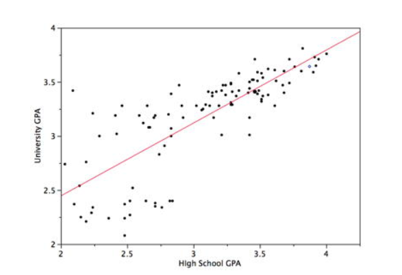
A different kind of linear regression called ARMA is what is applied to more 'noisy' linear variation [eg. a noisy cycle superposed over a linear trend]. This in turn is part of a larger field called 'time series analysis' [eg. see this].
Algorithm: Non-linear regression
Here we fit a higher order polynomial equation (parabola, ie. `ax^2 + bx + c`) to the observed data:
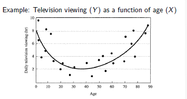
Algorithm: Two parameter, non-linear regression
Here we need to fit a higher order, non-linear surface (ie. non-planar) to the observed data:
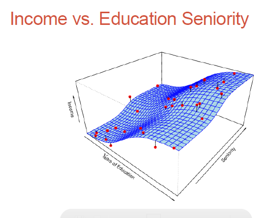
Algorithm: Non-parametric modeling
Parametric methods (eg. regression analysis which we just looked at) involve parameter estimation (regression coefficients).
Non-parametric methods - no assumptions on what our surface (the dependent variable) would look like; we would need much more data to do the surface fitting, but we don't need the surface to be parameter-based!
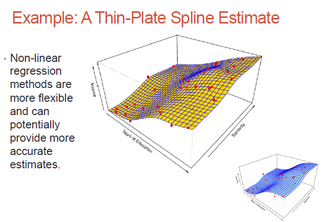
While non-parametric models might be better suited to certain data distributions, they could lead to a poor estimate as well (if there is over-fit)..
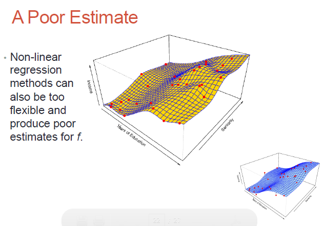
Algorithm: Logistic regression
Logistic regression is a classification (usually binary) algorithm:
- compute regression coeffs (linear) corresponding to a 'decision boundary' (line dividing two classes of training data)
- use the derived regression coeffs to compute outcome for new data
- transform the outcome to a logistic regression value, and use the 0..1 result to predict a binary outcome (class A or class B)
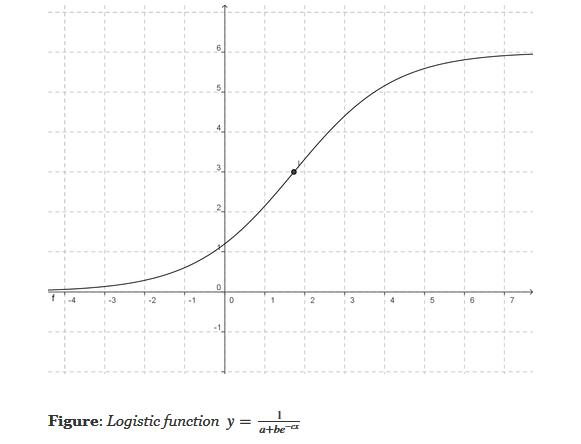
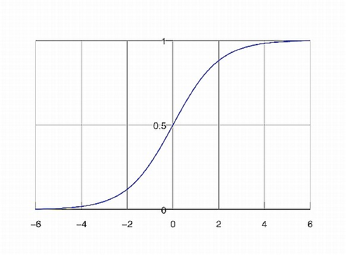
Result (the whole point of doing the three steps above) - we are transforming a continuous, regression-derived value (which can be arbitrarily large or small) into a 0..1 value, which in turn we transform into a binary class (eg. yes or no) [similar to using an SVM or creating two clusters via k Means]. Note that if we use the simpler form of the logistic equation (a=b=c=1), we'd need to transform our regression results to a 0-centered distribution before using the logistic equation - this is because 1/(1+exp(-x)) is 0.5, when x=0.
(Meta) Algorithm: Ensemble Learning
What if we used a training dataset to train several different algorithms - eg. decision tree, kNN, neural net(s)..? You'll most likely get (slightly!) different results for target prediction.
We could use a voting scheme, and use the result as the overall output. Eg. for a yes/no classification, we'd return a 'yes' ('no') if we got a 'yes' ('no') majority.
This method of combining learners' results is called 'boosting', and resulting combo learner is called an 'ensemble learner'. Why do this? "Wisdom of the crowds" :) We do this to minimize/eliminate variances between the learners.
FYI - 'AdaBoost' (Adaptive Boosting) is an algorithm for doing ensemble learning - here, the individual learners' weights are iteratively and adaptively tweaked so as too minimize overall classification errors [starting from a larger number of features used by participating learners to predict outcomes, the iterative training steps select only those features known to improve the predictive power of the overall model].
FYI - 'Bagging' (bootstrap aggregating) is a data-conditioning-related ensemble algorithm (where we employ 'bootstrap resampling' of data - divide the data into smaller subsets, use all the subsets for training different 'variations' of a model, use all the resulting models to predict outcomes, transform these into a single 'ensemble' outcome).
Algorithm: RandomForest (TM)
RandomForest(TM) is an *ensemble* method where we:
- grow a 'forest' (eg. with count=500) decision trees, run our new feature through all of them, then use a voting or averaging scheme to derive an ensemble classification result
- keep each tree small - use sqrt(k) features for it, chosen randomly from the overall 'k' samples

{kind=link}
{kind=link}